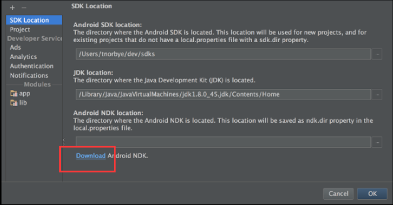
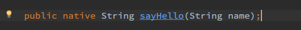
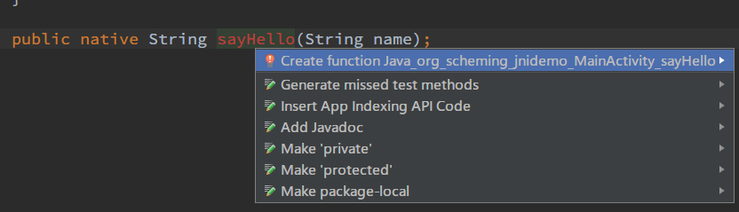

通常我们使用Java来编写Android App，但是在一些特殊场景，比如图像处理方面，Java的效率太低。这时候我们就可以考虑使用C进行开发。NDK是Google为我们提供的一个在Android上使用C开发的工具集合。
下载NDK，有两种方法：
在Android Studio 中打开 Module Setting，选择DownLoad 
在Android 官网下载，下载链接（可以直接复制到迅雷中下载）： https://dl.google.com/android/ndk/android-ndk-r10e-windows-x86_64.exe 下载完成后双击.exe文件，将会把NDK解压到当前文件夹。
配置NDK到Android Studio工程中：打开Module Setting，在NDK Location里选择NDK的位置。
修改Gradle 插件版本，这里使用的是 *experimental*版本，这个版本可以直接在build.gradle对ndk进行操作，不需要使用命令行生成.so。关于这个版本插件的使用，详见 http://tools.android.com/tech-docs/new-build-system/gradle-experimental
classpath 'com.android.tools.build:gradle-experimental:0.6.0-alpha5'
- 修改*app/build.gradle*配置，这里把我的代码贴出来。
apply plugin: 'com.android.model.application'
model {
android {
compileSdkVersion = 23
buildToolsVersion = "23.0.2"
defaultConfig.with {
applicationId = "org.scheming.jnidemo"
minSdkVersion.apiLevel = 15
targetSdkVersion.apiLevel = 23
versionCode = 1
versionName = "1.0"
}
}
android.ndk {
moduleName = "native"//这个名称会在调用JNI的时候使用
ldLibs.addAll(["android", "log"]) //添加JNI打印log的相关库
stl = "stlport_static" //添加C++ stl容器支持
/*
* Other ndk flags configurable here are
* cppFlags.add("-fno-rtti")
* cppFlags.add("-fno-exceptions")
* ldLibs.addAll(["android", "log"])
* stl = "system"
*/
}
android.buildTypes {
release {
minifyEnabled = false
proguardFiles.add(file('proguard-android.txt'))
}
}
android.productFlavors {
// for detailed abiFilter descriptions, refer to "Supported ABIs" @
// https://developer.android.com/ndk/guides/abis.html#sa
create("arm") {
ndk.abiFilters.add("armeabi")
}
create("arm7") {
ndk.abiFilters.add("armeabi-v7a")
}
create("arm8") {
ndk.abiFilters.add("arm64-v8a")
}
create("x86") {
ndk.abiFilters.add("x86")
}
create("x86-64") {
ndk.abiFilters.add("x86_64")
}
create("mips") {
ndk.abiFilters.add("mips")
}
create("mips-64") {
ndk.abiFilters.add("mips64")
}
// To include all cpu architectures, leaves abiFilters empty
create("all")
}
}
dependencies {
compile fileTree(dir: 'libs', include: ['*.jar'])
testCompile 'junit:junit:4.12'
compile 'com.android.support:appcompat-v7:23.2.0'
}
以上代码有几点注意的：
- apply plugin: ‘com.android.model.application’
- 属性值使用“=”号赋值
- 添加了modle块
在activity中写native方法。 
生成.c文件。选择方法名按alt+enter，选择create function。 
这时便在jni文件夹生成c文件，现在就可以在c代码里写相关的逻辑。下面贴出我的代码。
#include <jni.h>
#include <string.h>
JNIEXPORT jstring JNICALL
Java_org_scheming_jnidemo_MainActivity_sayHello(JNIEnv *env, jobject instance, jstring name_) {
const char *name = (*env)->GetStringUTFChars(env, name_, 0);
// TODO
char s[20] = "Hello ";
strcat(s, name);
(*env)->ReleaseStringUTFChars(env, name_, name);
return (*env)->NewStringUTF(env, s);
}